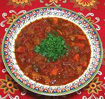

|
Pork & Tomato StewSpain - Murcia - Magra con Tomate | ||||
| Makes: Effort: Sched: DoAhead: |
4 main *** 1-1/2 hrs Yes |
This intensely flavorful stew is easy to make and very satisfying. It does depend a lot on the smoked paprika (you can go as high as 2 T) so don't substitute. This dish reheats very well. | |||
|
|
1 ------- 4 7 4 6 ------- 5 28 2 1/4 1-1/2 1/2 1/4 2 |
# --- oz oz oz oz --- cl oz c T t t T |
Pork (1) -- Vegetables Carrots Bell Pepper green (2) Roasted Red Peppers (3) Onion ------------ Garlic can Tomatoes Bay Leaf Red Wine (4) Smoked Paprika (5) Salt Pepper Olive Oil, Pure |
PREP - (40 min)
|